External localization
Updated 26.01.2024
Positioning and docking
Introduction
External localization feature introduces positioning on data matrix lines using a camera-based system. It can be used for locating vehicle's position on areas where laser scanners cannot be used. The feature also provides accurate docking since the cameras can provide sub millimeter X,Y position on the data matrix.
The system works so that camera(s) read absolute position from the data matrix tape. Then, using coordinate transformations, the position of the vehicle is located on the map, thus avoiding the need for natural feature positioning with laser scanners. Vehicle will correct its position to the center of data matrix line and simultaneously correct its heading to be aligned with the line. The stopping point is determined by the given end position on the route, the same way as in normal navigation.
Hardware requirements for the feature include Position Guided Vision sensor(s) and Data matrix code tape from Pepperl+Fuchs. Navitrol can read data directly from sensors using CAN Open. For other type of sensors, the customer is required to read the data from the sensors and send the data to Navitrol via Ethernet TCP/IP connection (see Appendix).
Teaching of data matrix lines into a map
There are multiple reasons why data matrix lines are needed in the global map.
-
Enable localization of the vehicle based on the camera measurements.
-
Determine when the vehicle should start and stop using the data matrix positioning.
-
Detecting error situations when the camera is unable to read measurements from the line.
-
Driving offsets can be added to individual lines in Navithor Tools.
Storing line positions
Teaching of a data matrix line is done by driving over the line in teaching mode and storing the position of the line into the teach data at certain intervals. Positions that are needed to teach are the start point and end point of the line, but sometimes also the points where it is planned that an AGV can enter or leave the line for easier drawing of the routes.
The most convenient way to teach these points is to do it manually, i.e., a position is saved by pushing the Save Pos button on the teaching interface (See Figure 1). This results in a convenient number of taught points in the teach file. Manual saving is selected by setting the ext_loc_teach_mode parameter to 2. There are also two options for automatically saving the points. If mode 1 is selected, a time interval for saving is defined in parameter ext_loc_teach_interval_ms. If mode 3 is selected, a distance interval for saving is defined in parameter ext_loc_teach_interval_dist (see external localization parameters in section 1.4).
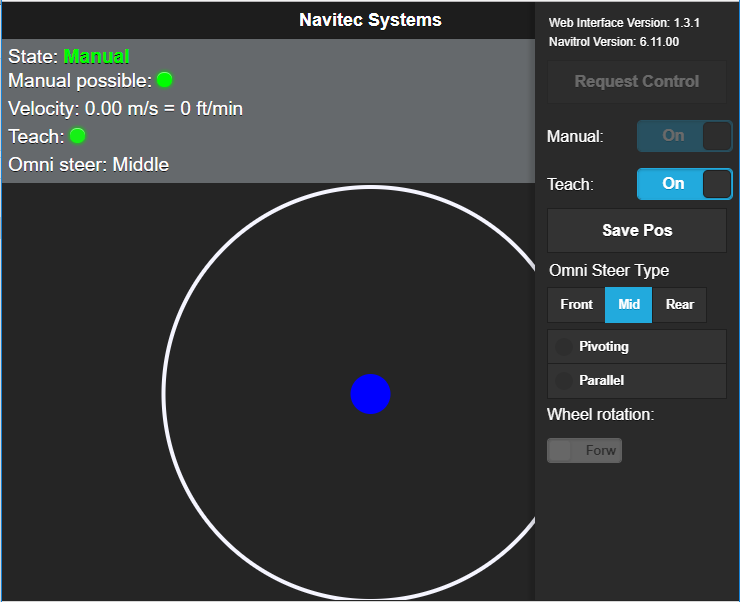
Figure 1: Web interface screen
Observe!
When teaching lines in big environments it is vital that the map is built from the same teach data as the line, because this guarantees the best accuracy between the line and the map. If a line is added to an old map from a new teach file it is very important that the new teach data is carefully shifted and rotated to accurately match the old map. Otherwise, the scanner positioning and line positioning will not match, and it will be difficult to draw the routes accurately onto the line.
Before teaching it is important to calibrate the vehicle, so that all tapes are correctly aligned with the scanner environment. The calibration process is described in the end of this document.
The teaching process:
-
Start the teaching mode from the WEB interface
-
Drive through the environment that shall be taught
-
When coming to a data matrix line, drive the sensor indexed 0 in parameter file (ext_loc_x_offset[0] etc.) to the beginning of the line and stop. In this document we use front camera to denote the 0 indexed sensor.
-
Verify that the camera sees the line (green detection led on camera, or if the Monitor is used measurements from camera appear on the map starting with "Ext0") and save the position by pushing the Save Pos button on the WEB interface
-
Continue along the line to the next line position to save (the vehicle does not need to follow the line accurately while driving, but the camera must detect the line when stopping to save the position). Stop the vehicle, verify that the camera detects the line and save the position.
-
Repeat driving to all desired line positions and save them
-
Save a final point at the end of the line (where the vehicles shall exit the line or stop to station)
-
Continue environment teaching until the desired part of the environment is taught
-
Turn off the teaching from the WEB interface
The preferable way of teaching a data matrix line is in the normal driving direction and along growing distance values of the line.
Processing the teach file in Navithor Tools
The data matrix line must be built into the scanned map by drawing the line according to the saved line positions. The saved line positions represent vehicle navigation points. Positions are not directly usable as they are in the teach file since they are not recorded exactly at the center of the line. A specific position shifting tool is used to transform the points as if the vehicle would be in an ideal position along the tape line at the saved point. This work is done in the following steps:
-
Normal matching and finalizing of the teach data and generation of the map (see Figure 2)
- If a map is already built, it is not necessary to finalize this teach data but matching it to the existing map is still necessary
-
Go to the External Localization tab (see Figure 3)
-
Select the first saved line point and push the Transform Point button
-
A transformation window opens, containing three sets of data:
-
The camera position on tape when the point was saved
-
The position where the camera position should be shifted so that it's on the center of the line and aligned with the tape
-
The camera position on-board the vehicle (vehicle parameter values for reference)
-
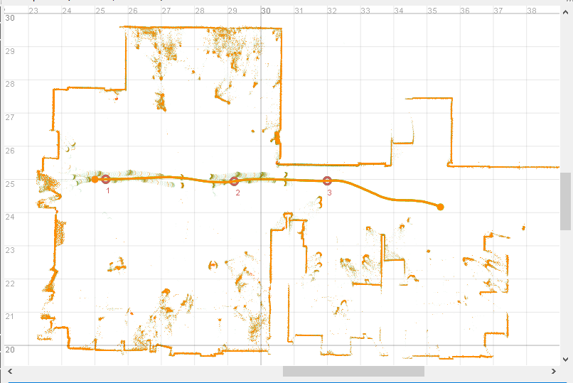
Figure 2: Matching and finalizing the measurements
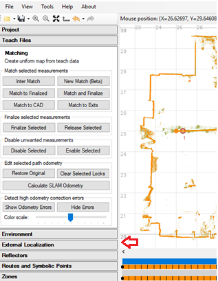
Figure 3: External Localization tab (red arrow).
-
Set the target pose values according to the teaching situation: The X-value should be the same as in the saved pose because it is the tape position
-
The Y-value should be 0 so that the position is shifted to the middle of the tape (as if the camera would detect it ideally centered)
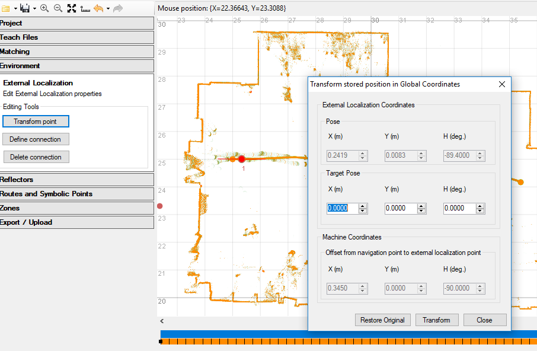
Figure 4: Transformation window for shifting the saved point data.
- The heading shall be according to how the vehicle shall detect the tape when driving the route (see Figure 5 Cases 1-3).
-
If the AGV follows the tape longitudinally as it was taught into the map, the heading is the camera offset (-90 degrees in the example in Figure 6)
-
If the AGV follows the route in the opposite direction than it was taught into the map, the heading shall be the camera offset ±180
-
If the route shall be driven transversally, the heading shall be the camera offset ±90 degrees depending on which side of the tape the route shall be. When two tapes are used, transform the line points so that the route points between the tapes are transformed from the route on which the front camera shall be when driving the route. The route points of the other tape can be transformed with the same angle, making the transformed points outside the tapes. Only the point pair of the front camera is used for route generation, but both need to be transformed anyway.
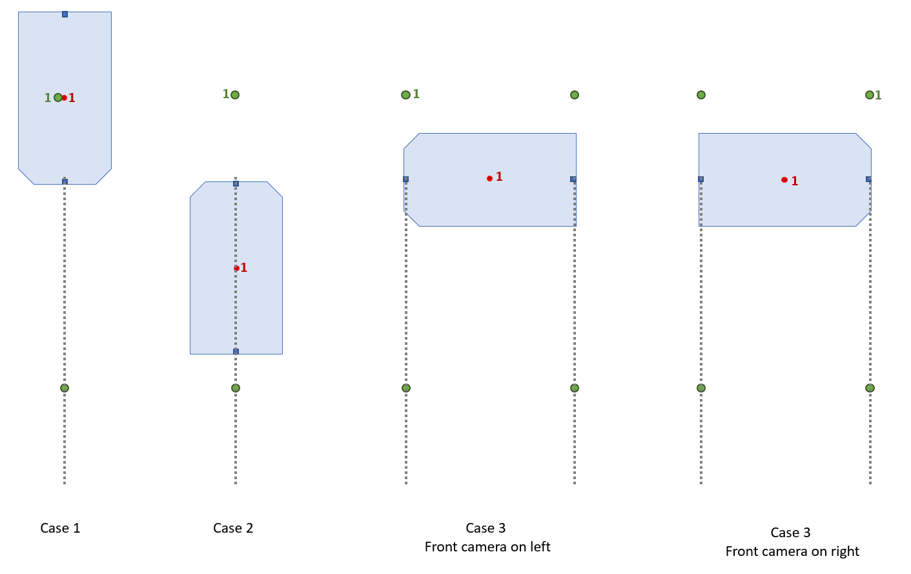
Figure 5: Transforming line points. Green point 1 is original saved position. Red point 1 is transformed saved position. Blue rectangles are the PGV camera positions.
- When the values are set, push the Transform button in the Transformation window and close the window (see Figure 6 and Figure 7).
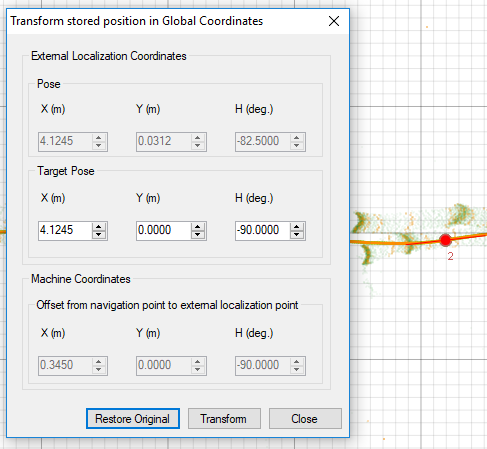 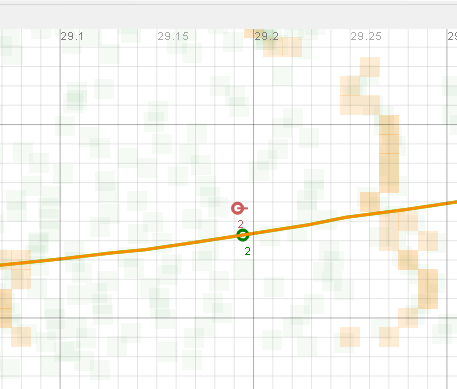
-
Transform all the saved line points in the same manner
-
Select Define Connection and combine start and end point of line to form the data matrix in to the map (see Figure 8). Note: Before NavithorTools v. 4.05.00 it is necessary to select first the line point with smaller X-value.
-
Select the Routes and Symbolic Points tab and draw the routes into the map.
-
Draw the route from point to point through all transformed line points, then add small straights at both ends to avoid affecting the line straightness by connecting curved segments to it (see Figure 9). The route needs to be straight for data matrix following.
-
Finally combine the line route to the rest of the route network.
-
When planning routes where cameras are along two different data matrix lines, the route needs to be marked with a route property tag Enable line docking along the entire data matrix line length. Need for tag will be obsolete from Navitrol 6.32 onwards.
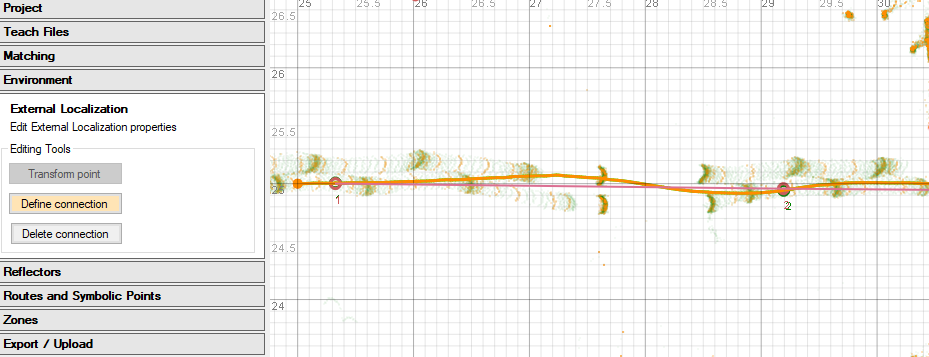
Figure 8: Defining the connection between the shifted points to form the line into the map.
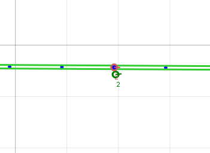
Figure 9: Drawing the route through the transformed line position points.
Note!
If driving along two lines, it is important that the lengthwise coordinates of the lines match each other so that the heading of the machine is calculated correctly relative to the tapes from X-measurements (see Figure 10). If the vehicle is not driving in correct angle to the tapes, start point of one of the lines must be shifted lengthwise using the Transform Point function (see Figure 11). The start point is the saved point with a smaller data matrix X-value. The shifting is done to the start point by changing the X-value of the point. When driving along two lines, teach only the start and end positions of the line.
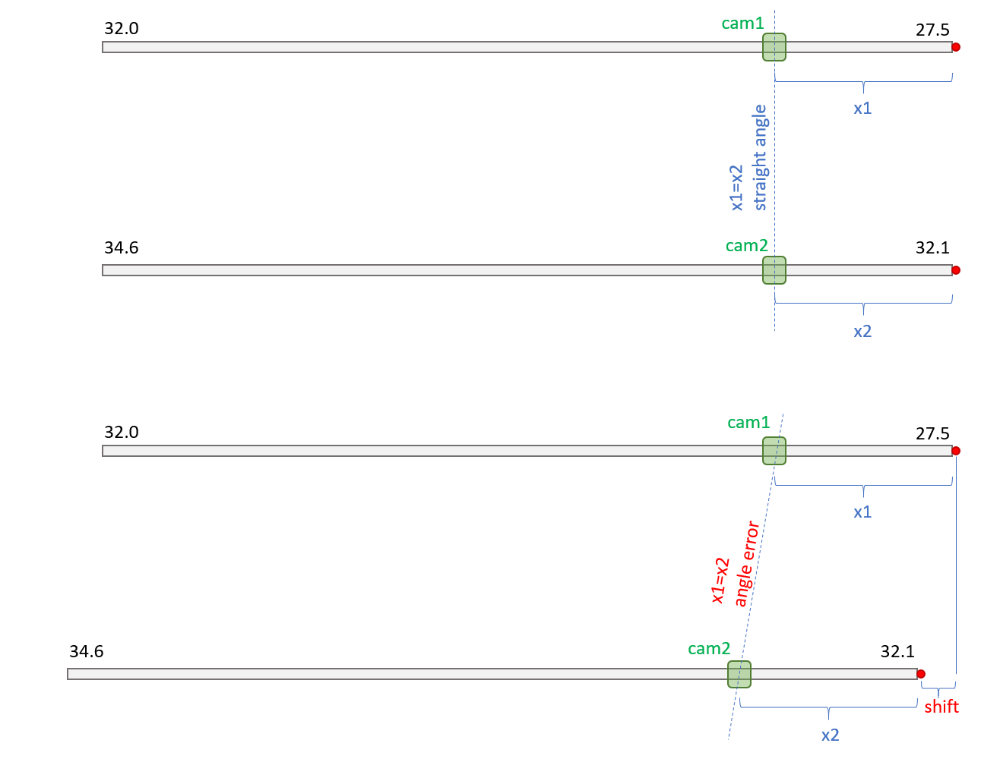
Figure 10: If the tape position detections are not giving a correct angle of the vehicle the saved positions starting the tape must be shifted.
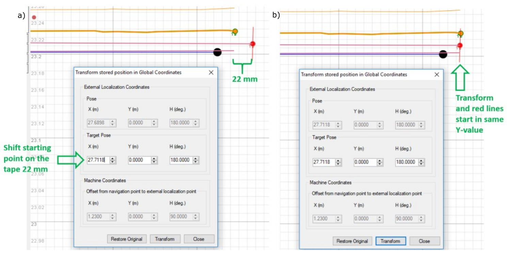
Figure 11: Shifting of the saved start point of a tape. a) Saved point (red) before shifted forwards on data matrix tape b) Saved point after being shifted 22mm forwards (27.118-26.898 = 0.022). The starting points of both connections are now at the same level.
Calibration of camera positions
In external localization, the navigation controls the vehicle so that the cameras are as accurately as possible on a data matrix line. In the line following two things need to be calibrated.
-
Parameters adjusting the reported position of the AGV relative to the map.
-
Parameters adjusting the AGV position relative to the line.
The calibration is preferably done so that vehicle is standing with both cameras on the same tape and tape X-coordinates growing towards the front of vehicle.
Adjust camera positions relative to machine
The position of the AGV's navigation point is prioritized to be calculated from the front camera detection, i.e. X-position on the tape and Y-offset from the tape centre line. These values are combined with the tape position in the map, which is defined by transformation points saved during teach-in of the environment and the data matrix tape. If only rear camera is on tape, then it is used for localizing navigation position.
If only one camera is used for data matrix following, the angle detection of the camera is used to get the heading of the AGV. If two cameras are used, the heading is calculated from the front camera detection point and the rear camera detection point. The latter is much more precise since the point detections are more precise than the angle resolution of the camera. However, heading accuracy will depend also on the calibration of the camera positions.
These parameters below represent the nominal positions of the cameras in meters which should be ideally equal in all the machines. Check that these parameters are valid before teaching any of the lines.
e.g. front camera:
ext_loc_x_offset[0] which is the X offset of the front camera from the navigation point to the sensor in machine coordinate system, positive forwards. Should be the full camera distance from navigation point in x-direction, which is easy to get from front and rear camera readings when both cameras are on the same tape.
ext_loc_y_offset[0] which is the Y offset of the front camera from the navigation point to the sensor in machine coordinate system, positive to the left. If one camera is used, this is the full camera distance from navigation point in y-direction, but when two cameras are used, they should be on the centre line and this value should be 0.
ext_loc_h_offset_deg[0] which is the heading offset between the machine coordinate system and the sensor coordinate system, positive CCW. Note that this is effective only when a single camera is detecting the line, since else the heading is calculated from front/rear camera positions.
Note: From Navitrol 6.32 onwards, two cameras can be mounted also to the left and right side of navigation point.
Calibrating the AGV position relative to the data matrix line
In case the cameras are not accurately positioned to the nominal positions (ext_loc_*_offset parameters) on the AGV body the AGV will not drive completely aligned with the tape. To correct this, the transversal camera positions can be adjusted with a small offset so that the tape line is followed accurately. This is done using the below offset parameters:
pgv_y_offset[0] for the front camera. This offset is positive to the left of the tape, seen in the growing value direction of the tape.
pgv_y_offset[1] for the rear camera. This offset is positive to the left of the tape, seen in the growing value direction of the tape.
It is important to note, that offsets must be so small that there is not a risk that the camera loses the tape from its view. The reading area of the camera is typically around 3-5 cm from the center of tape.
Longitudinal offsets can be adjusted using parameters below:
pgv_x_offset[0] for the front camera. This offset is positive to the growing value of the tape, seen in the growing value direction of the tape.
pgv_x_offset[1] for the rear camera. This offset is positive to the growing value of the tape, seen in the growing value direction of the tape.
The heading of the cameras can be adjusted using parameters:
pgv_angle_offset_deg[0] for the front camera. Positive value rotates camera's measurement to clockwise direction. Note: Monitor shows camera's measurement so that positive is to counter-clockwise in machine coordinates.
pgv_angle_offset_deg[1] for the rear camera. Positive value is to clockwise direction.
These should be adjusted so that the tape measurement is 0 degrees when the tape is aligned with the vehicle and the tape values are growing in the forward direction of the AGV. Let ext_loc_h_offset_deg[] parameters to be zero if using pgv_angle_offset_deg[] parameters.
In Appendix section 3.2, proposed calibration method for omni vehicle with two PGVs is represented.
When to adjust line position on map and when to calibrate the vehicle parameters
If the scanner points do not match to the environment when the vehicle comes to a line, check if this happens for the AGV that was used for teaching the line. If true, check that the camera parameters have been calibrated properly and try to reteach the line, carefully following the teaching process. When the AGV is positioning well, calibrate then the camera parameters for the rest of the AGVs so that each AGV's scanner measurements match equally to the map. Note: Laser scanner positions should be calibrated before calibrating camera parameters.
Following one line: If all vehicles are driving on the side of the route and the scanner measurements match with the map, the route shall be adjusted. If the tape is sidewise offset to the desired position, the tape can be adjusted in Tools by setting an offset to it (add offset in the transform window). Offsets must be small to keep the cameras above the tape.
Following two lines: If all AGVs are driving in a wrong angle to the route, the transformation points of the tapes shall be adjusted. If individual AGVs are driving with different angles to the tape, return to calibrations of the vehicles.
Parameters for External localization (PGV camera)
| Type | Name | Description |
|---|---|---|
| int | teach_file_format | Only teach file format 5 enables to save line positions |
| int | ext_loc_enabled | External localization 0 = disabled 1 = enabled |
| int ext_loc_teach_mode Teach mode 0 = pose not saved 1 = save pose with time interval 2 = save pose only when Save Pos is pressed (recommended) | ||
| int | ext_loc_teach_interval_ms | Interval for position storing of line position when automatic storing is selected (ext_loc_teach_mode is 1) |
| float | ext_loc_x_offset[0...3] | Nominal X offset from the navigation point to sensor in machine coordinate system, positive forwards |
| float | ext_loc_y_offset[0...3] | Nominal Y offset from the navigation point to sensor in machine coordinate system, positive to the left |
| float | ext_loc_h_offset_deg[0...3] | Nominal heading offset between machine coordinate system and sensor coordinate system, positive CCW |
| float | pgv_x_offset[0...3] | X-offset in meters from nominal position, only small correction values |
| float | pgv_y_offset[0...3] | Y-offset in meters from nominal position, only small correction values |
| float | pgv_angle_offset_deg[0...3] | Angle offset in degrees from nominal heading |
| float | ext_loc_dist_from_line | Distance from line when external localization is enabled |
| int | ext_loc_for_pos_ctrl_mode | External localization used directly for position control (e.g. in case of line following) 0 = disabled 1 = using only one sensor 2 = using two sensors when applicable 3 = require always two sensors (Navitrol 6.32 onwards) |
| int | ext_loc_pos_ctrl_dist_err_only | Position control option to use only distance error from line, when just one sensor is reading the data matrix. Intended for non-omni type vehicles that have sensor(s) outside of navigation point (Navitrol 6.32 onwards). |
| int | ext_loc_pos_ctrl_axis | Axis where the offset to the route is calculated: 0 = y-axis,1 = x-axis |
| int | ext_loc_pos_ctrl_max_h_err | Max heading error to continue line following |
| int | ext_loc_max_time_since_last_meas_ms | Maximum time in ms since last valid measurement when inside external localization area |
| float | ext_loc_max_dist_since_last_meas | Maximum travelled distance since last valid measurement when inside external localization area (Navitrol 6.32 onwards). Recommended to use this instead of ...time_since_last_meas_ms. Set 0 to disable one or the other. |
| float | ext_loc_heading_filt_alpha | Filtering gain for heading measurement from sensor (0.1 -- 1.0), default 1.0 |
| int | ext_loc_pos_ctrl_only | Driving line following but not using data matrix for localization of the AGV |
| float | ext_loc_max_h_err_deg | Maximum heading difference between previous and newly calculated AGV heading. External localization pose is ignored if change is too much. |
| float | ext_loc_max_xy_err | Maximum difference between new and previous xy-position. External localization pose is ignored if change is too much. (Navitrol 6.32 onwards). |
| int | ext_loc_localize_without_pos_ctrl_checks | Option to keep localizing when position control sanity checks prevent use of data matrix for driving corrections (Navitrol 6.32 onwards). |
| float | ext_loc_pid_heading_p | Position control gain for heading when external localization is active <= 0.1 use normal pc_pid values<br>> 0.1 use this parameter |
| float | ext_loc_pid_dist_p | Position control gain for distance when external localization is active <= 0.1 use normal pc_pid values<br>> 0.1 use this parameter |
| int | ext_loc_stop_point_enabled | Stop point is given in data matrix coordinates for sensor (X-position) instead of driving to route end position. |
| float | ext_loc_stop_point | Stop point value for sensor (X-position) |
| float | ext_loc_check_path_ready_dist | Distance from stop point inside of which the stopping check starts. After drive is ready and before next stop can be checked, a measurement must be outside of this distance from stop value. |
| Communication parameters | ||
| uint | pgv_enabled | PGV sensor enabled (CAN only) |
| int | pgv_can_node_id[0...3] | CAN node ID of camera |
| int | pgv_model[0...3] | 0 = default 1 = safePGV |
| int | pgv_max_missing_msg | Number of missing messages for error to be triggered (Ethernet only) |
| float | pgv_cam_res_x | The x-axis resolution of the PGV cameras in meters, default 0.0001 |
| float | pgv_cam_res_y | The y-axis resolution of the PGV cameras in meters, default 0.0001 |
| float | pgv_cam_res_h | The heading resolution (deg) of the PGV cameras, default 0.1 |
| int | ext_loc_eth_model[0...3] | Linefollowing config for ethernet comms -1 = disabled 0 = PGV (custom message) |
| int | ext_loc_eth_port[0...3] | Linefollowing port (5333) |
| int | ext_loc_eth_swap_bytes | 0 = little endian 1 = big endian |
| int | ext_loc_eth_protocol | 1 = Stream 2 = DGRAM |
Example parameters to get started for two PGV (CAN Open) cameras
| Parameter | Value |
|---|---|
| I,ext_loc_enabled, | 1 |
| I,ext_loc_teach_mode, | 2 |
| F,ext_loc_x_offset[0], | 0.5 |
| F,ext_loc_y_offset[0], | 0.0 |
| F,ext_loc_h_offset_deg[0], | 0.0 |
| F,ext_loc_x_offset[1], | -0.5 |
| F,ext_loc_y_offset[1], | 0.0 |
| F,ext_loc_h_offset_deg[1], | 0.0 |
| F,ext_loc_dist_from_line, | 0.05 |
| I,ext_loc_for_pos_ctrl_mode, | 2 |
| F,ext_loc_heading_filt_alpha, | 0.3 |
| U, pgv_enabled, | 1 |
| I,pgv_can_node_id[0], | 3 |
| I,pgv_can_node_id[1], | 4 |
| F, pgv_x_offset[0], | 0.0 |
| F,pgv_y_offset[0], | 0.0 |
| F,pgv_x_offset[1], | 0.0 |
| F,pgv_y_offset[1], | 0.0 |
| F,pgv_angle_offset_deg[0], | 90.0 |
| F,pgv_angle_offset_deg[1], | -90.0 |
Troubleshooting
-
External localization does not start even though PGV gets readings from the tape
-
Check that you have properly transformed teach points and defined the connection in Navithor Tools.
-
Check that your camera parameters are correct. Typical issue is that heading of the camera is wrong and a sanity check rejects the measurement (ext_loc_max_h_err_deg).
-
From Navitrol 6.32 onwards there is a possibility to show the location of the data matrix on the map and PGV positions in Navitrol Monitor (see Figure 12). The position difference from the center of the line to the PGV can't differ more than distance defined by parameter ext_loc_dist_from_line.
-
Check that the camera parameters for the position and for the connection have the same index. In other words, the measurements come from the correct camera.
-
-
ERROR_EXT_LOC_TOO_LONG_SINCE_MEASUREMENT is shown
-
This means that based on AGVs position, the PGV should be able to read measurements from the data matrix but it is not. The distance which defines if the PGV should be able to read the data matrix is ext_loc_dist_from_line. This is the distance between the PGV's center position to the closest line point on the map. The Error is triggered after a timeout expires without getting valid measurements (ext_loc_max_time_since_last_meas_ms). Note: From Navitrol 6.32 onwards it is recommended to use ext_loc_max_dist_since_last_meas instead of the timer to avoid situation when AGV stops at the edge of the start/end of tape, thus triggering error when AGV is not moving.
-
Check what is the reason for not receiving measurements from the PGV
-
To get AGV out of the error situation, move the AGV manually so that PGV is able to get measurements or move the AGV to route point that is far enough from the data matrix.
-
If the AGV stops just before or after the data matrix starts, this error might be triggered unwanted. Adjust ext_loc_dist_from_line to a smaller value to diminish these situations (e.g. 0.05). This parameter is also used as a search area to identify from which data matrix the PGV is getting measurements, so the value of the parameter cannot be arbitrarily small. Note: When using parameter ext_loc_max_dist_since_last_meas, ext_loc_dist_from_line can be left a bit higher value (e.g. 0.08) but set then ext_loc_max_dist_since_last_meas to a bigger value (e.g. 0.15).
-
-
AGV position jumps when changing to external localization and scanners don't match to environment
-
If this happens to the AGV that was used to teach the line, check that you followed the calibration and teaching process. Note: In case the taught data matrix line is very short (less than a meter), the heading inaccuracies of the PGV sensors and other inaccuracies in the teaching process might generate a poor result. Try to get PGV sensors center point to be close to center of the line and aligned with the tape when saving the teach positions. The less it is needed to transform the points in Navithor Tools the better the result. It's also always better if the map in this area can be built from the same teach file that is used to teach the line positions.
-
If this happens to other AGVs, ensure first that you have calibrated the laser scanner positions. Then, calibrate the camera parameters (see section 1.3.2)
-
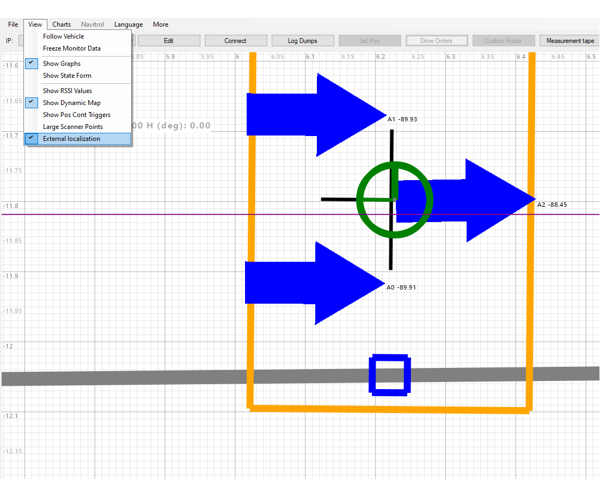
Figure 12: View external localization on Monitor. Grey line is data matrix and blue rectangle represents the PGV.
Data Matrix Code (DMC) Docking
Introduction
In context of External localization, docking is a separate feature that requires its own license. The idea is to use the data matrix tape for line following only and leave out the positioning with the PGV camera. This means that data matrices are not taught to the environment nor will their exact position on the map be known. Instead, symbolic points on the route network will hold the needed information about the data matrix lines.
In short, the AGV is given a drive order to a destination symbolic point which has data matrix information defined. When the AGV is close enough to the symbolic point and receives a valid measurement from the PGV camera, it goes to a docking state and uses from here on only the data matrix as a reference for the drive. The AGV will stop based on a predefined value on the data matrix tape. After it gets a drive order to leave the location, it will follow the data matrix tape until the sensor(s) stop receiving valid measurements from the tape.
Feature is available from Navitrol 6.34 onwards.
Configuration
The DMC docking has following requirements for its configuration:
- The Data matrix tape must be placed so that data matrix X-values grow towards the symbolic point the AGV is driving to (See Figure 13).
- This means that the stop point cannot be approached from both sides along the data matrix
- AGV can drive both forwards and reversing to the symbolic point. The route should be straight and without branches whenever the AGV is driving along the data matrix tape.
- Only one heading per QR docking symbolic point is supported
- Symbolic point must have QR docking enabled. In addition, symbolic point must be placed so that it is close to the location that the AGV is needed to be stopped.
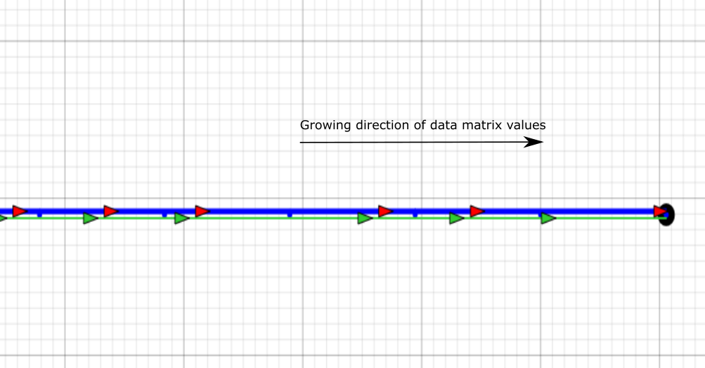
Figure 13: Orientation of data matrix tape to the route
There can be only one data matrix line that the AGV follows but there can be one or two PGVs used for driving. However, mainly the PGV camera that is 0-indexed in the parameter file will be used for stopping the AGV (ext_loc_x_offset[0] etc.). Only when the 0-indexed PGV camera is not on the tape, the other camera would be used for stopping the AGV.
In Navithor Tools, symbolic point should be filled with the data matrix tape information. These include the start point, end point and stop point (X-coordinate). Start and end point will determine the valid range for the PGV measurement when driving in or out of the symbolic point. Stop point will naturally trigger stopping of the AGV. It is incorporated with stopping offsets (pc_stop_distance_offset & ext_loc_stop_distance_offset) for targeting that PGV reading would be close to the stop point value at the end.
There can be also a driving offset defined for the symbolic point which will be activated when the AGV starts following the data matrix line. Positive transversal offset will drive the AGV to the left side from the route heading. Positive frame heading offset will drive the AGV rotated to counter-clockwise direction. Offsets should be kept small.
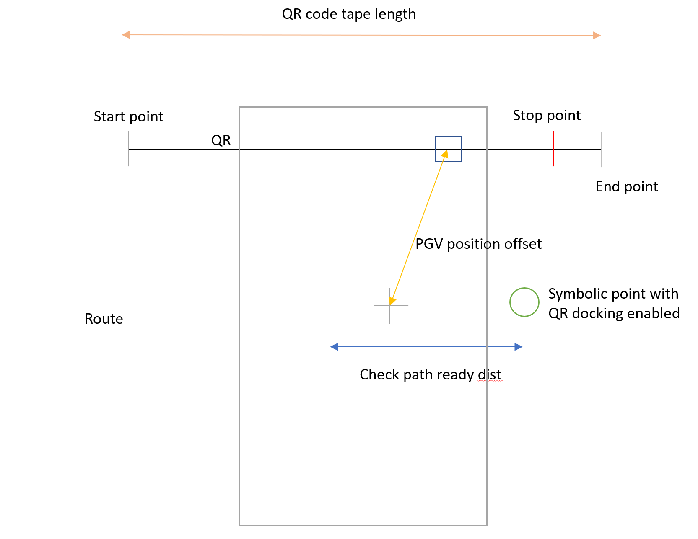
Figure 14: Docking configuration
Logic and error detection
Main logic
When the AGV is approaching the symbolic point that has data matrix values defined, it will change the driving reference point from route to data matrix line as soon as following conditions are met:
-
PGV X-measurement is between defined start and end point.
-
Distance between the AGV and symbolic point is less than data matrix length + PGV offset from navigation point (Euclidean distance) + small tolerance (0.1m)
-
Heading of the AGV relative to the tape is close enough to the target heading (parameter ext_loc_docking_max_h_err_deg).
Once the AGV changes to follow data matrix line, it will not switch to follow route in the same drive order anymore.
The AGV starts to calculate when to stop after the PGV X-measurement is closer than "Check path ready dist" from the stop point value. Trigger to stop, as mentioned, is determined by the PGV X-measurement and stopping offsets.
After finishing the stop and executing possible tasks at the location, the AGV will be given a drive order away from the symbolic point. The AGV will be following the data matrix line until it stops receiving valid measurements from the PGV sensor(s) for small driven distance (ext_loc_strict_max_dist_since_last_meas).
Error detection
As it is desired to drive to the data matrix stop point accurately, it will be constantly supervised that the AGV is receiving valid PGV measurements while approaching or leaving the symbolic points.
- Approaching the symbolic point
-
The AGV must get at least one valid PGV measurement before it is closer than "Check path ready dist" from symbolic point, otherwise error ERROR_EXT_LOC_NOT_SAFE_TO_DRIVE is triggered.
-
After getting first valid measurement and changing to data matrix line follow, it is checked that the AGV does not travel without valid measurement for more than ext_loc_max_dist_since_last_meas while outside "Check path ready dist" from the symbolic point. ERROR_EXT_LOC_TOO_LONG_SINCE_MEASUREMENT. Note: If AGV stops to this error at very start of data matrix line, it is likely that the heading validation has failed.
-
While inside "Check path ready dist" from symbolic point, a stricter limit is used ext_loc_strict_max_dist_since_last_meas. ERROR_EXT_LOC_TOO_LONG_SINCE_MEASUREMENT
- Leaving the symbolic point
-
The AGV must get valid PGV measurements also when leaving the symbolic point while inside "Check path ready dist" from symbolic point. Parameter ext_loc_strict_max_dist_since_last_meas will be used for error detection. ERROR_EXT_LOC_TOO_LONG_SINCE_MEASUREMENT
-
After the AGV is further than "Check path ready dist" distance from symbolic point, it will change to route following once there is no more valid PGV measurements for travelled distance of ext_loc_strict_max_dist_since_last_meas.
-
After software reboot
-
If the AGV is closer than "Check path ready dist" from the symbolic point that is target for a new drive order (or there is some other ambiguity from which direction the AGV is approaching the stop point), it will be checked whether the drive is ok to be ready.
i. Drive is ready if PGV X-measurement is closer than ext_loc_path_ready_max_dist_err from the stop point.
ii. Error ERROR_EXT_LOC_NOT_SAFE_TO_DRIVE will be triggered if the first condition is not true
-
Note! Some of the errors are persistent. Put the AGV to Manual state and possibly drive away from the error location. Turn off the Manual state and wait for the error to be cleared.
Parameters
Main parameter for enabling the feature is ext_loc_docking_enabled. Enabling the feature also requires a license (External Localization -- Docking). Other parameters that are required to be set are:
-
ext_loc_stop_point_enabled, 1
-
ext_loc_max_dist_since_last_meas > 0
-
ext_loc_strict_max_dist_since_last_meas > 0
List of docking related parameters can be seen in the table below:
| Type | Name | Description |
|---|---|---|
| Int | ext_loc_docking_enabled | Enable docking 0 = Disabled 1 = Enabled |
| Int | ext_loc_stop_point_enabled | Enable stop point 0 = Disabled 1 = Enabled |
| Float | ext_loc_max_dist_since_last_meas | Maximum distance in meters since last valid measurement when data matrix following is active but the AGV outside "Check path ready dist" |
| Float | ext_loc_strict_max_dist_since_last_meas | Maximum distance in meters since last valid measurement when data matrix following is active and the AGV inside "Check path ready dist" |
| Float | ext_loc_check_path_ready_dist | "Check path ready dist" is a multipurpose distance parameter. It is used in error detection. It is also used for starting to check when to stop the AGV. |
| Float | ext_loc_path_ready_max_dist_err | Max distance between PGV measurement and stop point to determine drive to be instantly ready at the start of new drive order. |
| Float | ext_loc_docking_max_h_err_deg | Maximum heading error to the target heading when data matrix line follow is active |
| Float | ext_loc_stop_distance_offset | Additional offset for stopping (pc_stop_distance_offset in general use) on data matrix. Positive value if the AGV stops too early. |
| Int | ext_loc_for_pos_ctrl_mode | Position control parameter 1 = use always only one PGV 2 = use two PGVs when applicable 3 = require always two PGVs |
Same PGV position and communication parameters are needed to be set as when using the positioning and line following feature ext_loc_enabled (see section 1.4). It is also necessary to calibrate the position of the PGV cameras to achieve accurate driving from the whole fleet of AGVs (see Chapter 1.3 and 3.2).
Appendix
Ethernet communication protocol
Navitrol can directly communicate with CAN Open PGVs. For all other type of PGVs, the customer is required first to read the data from the sensors and send the data to Navitrol via TCP/IP Ethernet connection. Navitrol will act as a server and can be configured to receive data to STREAM sockets or DGRAM (UDP) sockets. UDP is recommended. The port is configurable with parameter (see section 1.4). Default port is 5333 and default byte order is little endian. The customer should send the message periodically, for example with 30ms interval.
| Module | Content | Type | Byte count | Comments |
|---|---|---|---|---|
| Counter | UINT32 | 0.0 | Running number 0, 1, 2... | |
| PGV_Module 2 | ||||
| Status ERR | UINT16 | 4.0 | Error message present | |
| Status NP | 4.1 | No position information/OUT | ||
| Status WRN | 4.2 | Warnings present | ||
| Status RES | 4.3 | Reserved | ||
| Position data Y | INT32 | 6.0 | Default resolution 0.1mm | |
| Angle data | UINT16 | 10.0 | Default resolution 0.1 deg | |
| Position data X | UINT32 | 12.0 | Default resolution 0.1 mm | |
| Speed | INT16 | 16.0 | Default resolution 0.1 m/s | |
| Position data Z | UINT16 | 18.0 | Default resolution 1mm | |
| 20 |
Proposed calibration method for vehicle with two PGVs
Calibration setup
-
Attach a QR tape to the floor in a testing area, where calibration markers can be permanently attached to the floor for later use.
-
Teach-in the tape line and make a map in Tools.
-
Draw short routes with target symbolic points along the tape line, one forwards and the other reversing from the same direction. The route should be parallel to the tape at a distance of ext_loc_y_offset from the tape and the symbolic points should be on equal positions along the tape. One route on the tape is enough if the sensors are on the vehicle centre line.
-
Mark the route lines on the floor, i.e. lines parallel with the tape on a ext_loc_y_offset distance from the tape.
-
Mount laser pointers pointing towards the floor in both ends of the AGV. The laser points should be exactly on the centre line of the AGV -- or the tape line, i.e. the sensor line. They should also be lengthwise on equal distance from the vehicle navigation point, else the calibration will not work.
[NOTE]: Any inaccuracy in line marking, mounting the laser pointers and subsequent calibration evaluation all directly influence the final driving accuracy and equality between AGVs.
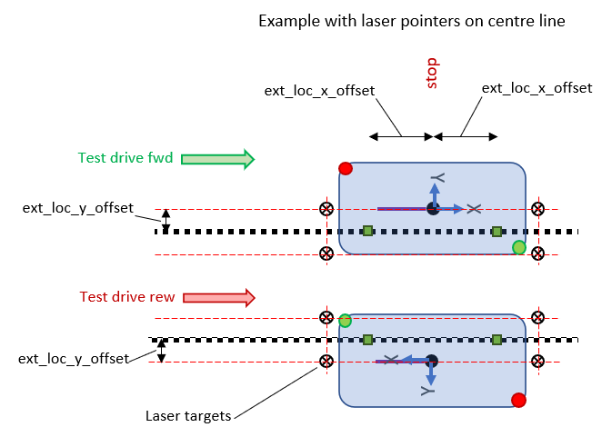
Figure 15: Calibration setup. Green and red circles represent the laser scanners and green rectangles represent the PGV cameras.
Calibration sequence
-
Give the AGV a forward's drive order to the symbolic point (Test drive fwd in Figure 16)
-
When the AGV stops at the symbolic point:
-
Read the x-readings from both sensors and set initial pgv_x_offset values so that they form the correct distance between the sensors according to the equation below
xmeas[0] - xmeas[1] = ext_loc_offset[0] + pgv_x_offset[0] - ext_loc_offset[1] - pgv_x_offset[1] #(1)
-
-
As an initial guess, set zero values to pgv_x_offset[0] and pgv_x_offset[1].
-
Measure how far sideways the laser points are from the marked route line (or QR tape) and adjust the pgv_y_offset values to align the vehicle with the line and side shift it onto the line.
-
Give the AGV a backwards drive order to the start of the test route and then a new drive order to the symbolic point.
-
When the AGV stops at the symbolic point:
-
Measure how far the laser points are from the marked route line and re-adjust the pgv_y_offset values to align the vehicle with the route line and tape.
-
If the laser points are on equal distances from the line, adjust both pgv_y_offsets equally to side shift the vehicle to the line.
-
-
Repeat the test drives until both laser points are on the route line.
-
When both laser points are on the line, mark the laser point positions on the floor with movable laser targets.
At this stage the pgv_y_offsets should be correct, the pgv_x_offsets are only adjusted for correct distance between sensors according to Equation 1. Thus, longitudinally the sensors are on a correct distance from each other but may still need shifting relative to the vehicle navigation point.
Since vehicle position is calculated from the front sensor, the calibration must be done alternately forwards and backwards until the stopping point is the same in both directions.
-
Turn the AGV 180 degrees, so that it now reverses to the symbolic point from the same direction as it previously drove forwards (Test drive rew, in Figure 16).
-
Give the AGV a backwards drive order to the symbolic point
-
When the AGV stops at the symbolic point:
-
Verify that the laser points are on the marked route line, no adjustments to the pgv_y_offset should be necessary at this stage. Any transversal errors will depend on line setup inaccuracy, difference in vehicle control between forwards and reverse driving or other such reasons.
-
Measure how far the laser points are longitudinally from the laser targets and adjust both front and rear sensor pgv_x_offset by half of the error, keeping in mind the relation described in Equation 1 should still be valid, i.e. if pgv_x_offset[0] must be increased to stop earlier, the pgv_x_offset[1] must be reduced accordingly.
-
-
Make a new test drive and mark the laser positions on the floor
-
Turn the vehicle 180 degrees and repeat the Test drive fwd.
-
Verify that the laser points are on the marked route line.
-
Measure how far the laser points are longitudinally from the laser targets and adjust both front and rear sensor pgv_x_offset by half of the error, remembering that the relation in Equation 1 should still be valid.
-
If the laser points match with the laser targets, the parameter calibration is ready for repetitive verification drives alternating between forwards and backwards driving.
-
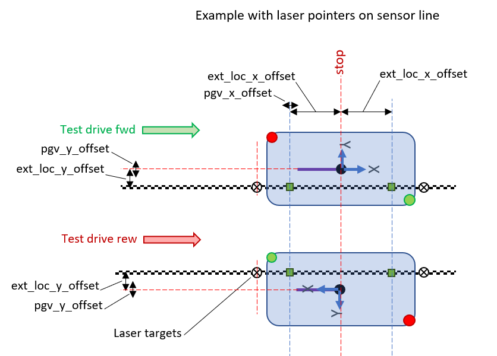
Figure 16: Calibration sequence
Repeat this testing by adjusting the laser point markers and alternating between forwards and backwards driving until the laser points match with the laser targets in both forwards and backwards driving.
Finally, verify that the repetition accuracy at the laser points is less than the required accuracy in production, every time in both directions. Mark the laser spots from several tests and make master targets from the mean results of the tests. These master targets shall be used in the calibration of all other AGVs in the fleet.
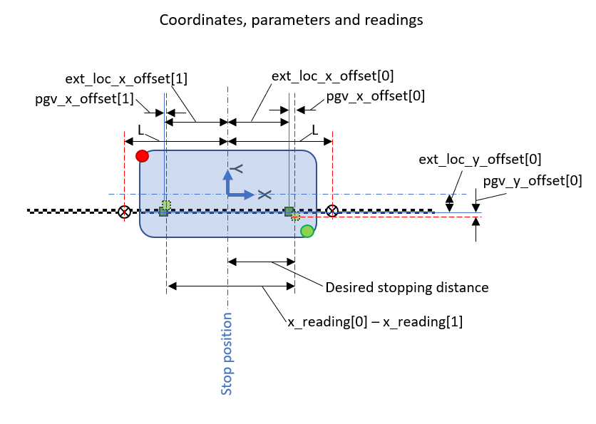
Figure 17: Coordinates, parameters and readings. L = distance to laser target from stop position.
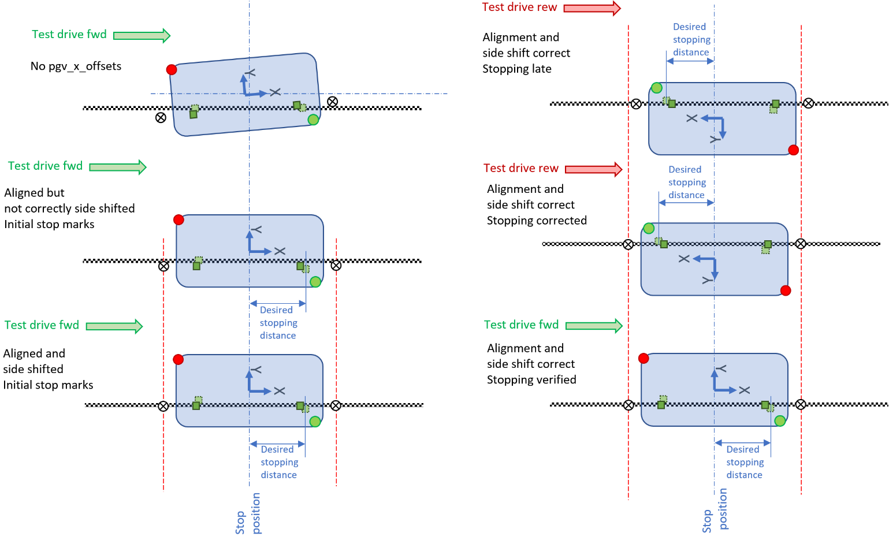
Figure 18: Calibration sequence visualized.
Calibrating next AGVs
Follow the calibration sequence of the first vehicle. In this calibration temporary movable laser targets can be used for the sake of the calibration sequence, but finally the calibration must result in accurate positioning to the original master targets from the first vehicle calibration. Otherwise, the vehicles will not drive accurately to the same position.
NOTE: Even though the calibration is done only in longitudinal driving, the calibration values are valid also in transversal driving. Calibration values should not be changed in any other case than in this calibration sequence.
Longitudinal driving:
-
A transversal position error can be solved by adding a transversal offset to the line transformation of the tape in Navithor Tools. This is naturally affecting the driving of all vehicles, so individual differences cannot be corrected. Currently, the transversal offset can be only used when approaching the stop point always from the same side. Positive offset will make the AGV drive to left of the route heading.
-
A heading error can be solved by adding a heading offset to the line transformation of the tape in Navithor Tools. Positive heading offset will make the AGV drive with a counter-clockwise heading offset.
-
If there are differences in position or heading between individual machines, the only means to correct the situation (except for recalibration) is to give drive orders with different transversal offsets to each machine.
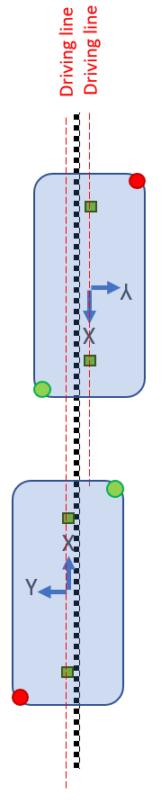
Figure 19: Transversal offset
-
For longitudinal stop position errors, the route end must be corrected, since the navigation point position is calculated from the tape, but then compared to the route end.
-
If there are differences in longitudinal position between individual machines, the only means to correct the situation (except for recalibration) is to give drive orders with longitudinal offset.
Driving onto or away from a tape
- Any transversal offset between the planned route and the actual line following trajectory causes a driving action to correct the offset when the tape line is entered or left. This is corrected by moving the route transversally to match the line once the line following has been finally adjusted.
Do not attempt to
-
Change the starting point of a tape by moving the transformation x-point value forwards. This works, but it can cause heading errors as it changes the x,y-relation in the tape line transformation. Therefore, always set a teach point at a location where the line following shall be started.
-
Change the tape line angle by modifying the transformation y-point value.
Transversal driving
If the sensors have been calibrated on the longitudinal line, and alignment and stopping behaviour are consistent in all directions, the calibration values should not be adjusted anymore. It is tempting to change calibrations if the transversal behaviour is incorrect, but it will only destroy the results of the structured calibration sequence.
NOTE: vehicle dependent line following behaviour cannot be calibrated separately for longitudinal and transversal driving!
In transversal driving the transversal error is calculated from the rear sensor position on the tape. The calculation utilizes positions from both front and rear sensor to get the heading of the machine and uses this heading and the ext_loc_x_offset[1] distance to calculate the vehicle navigation point relative to the rear sensor position.
This must be remembered when adjusting a vehicle to drive equally and stop at the same location irrespective of heading direction (vehicle heading +90° or -90 ° to the route).
The first thing to calibrate is the vehicle heading. If the vehicle heading is not perpendicular to the tapes, the transformation points of either tape must be adjusted along the tape direction. In the example Figure 20 the rear tape transformation must be shifted in +x direction or the front tape transformation in the --x direction. The calibration is correct when the vehicle is in the same direction in both driving directions, i.e. driving with vehicle heading +90° or -90 ° to the route.

Figure 20: Transform X-position of the start teach point to adjust heading.
When the vehicle drives in a correct angle to the tapes, the transversal position of the vehicle can be calibrated. The reason for transversal difference when driving with the heading in different directions is that the position is calculated from the rear sensor as base point. If the tapes are not exactly on the correct distance from each other, this distance difference will cause a position error. This is illustrated by X-diff in Figure 21.
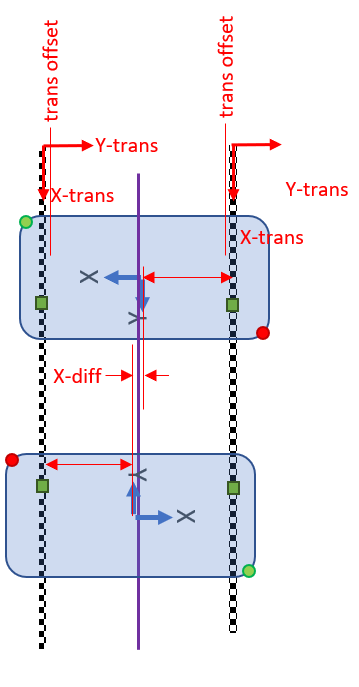
Figure 21: Transversal errors when driving with different orientations.
Also note, that PGV sensors must be on equal distance (within PGV offset calibration range) from the navigation point. Otherwise, the vehicle will not drive along the same line with heading in opposite directions.
-
The transversal position error can be solved by adding a transversal offset to the line transformations of the tapes in Navithor Tools. This is affecting the driving of all vehicles, so individual differences cannot be corrected.
-
If there are differences in transversal position between individual machines, the only means to correct the situation (except for recalibration) is to give drive orders with different transversal offset to each machine.
-
For longitudinal stop position errors, the route ends must be corrected since the navigation point position is compared to the route end. Since there are different routes for heading +90° and -90° the route ends must be moved longitudinally to match each other. They are correct when the vehicle stops equally in both directions (see Figure 22).
-
If there are differences in longitudinal position between individual machines, the only means to correct the situation (except for recalibration) is to give drive orders with longitudinal offset.
NOTE: that the route stopping offset is not for adjusting the stopping position on individual routes as it acts equally on all stop situations.
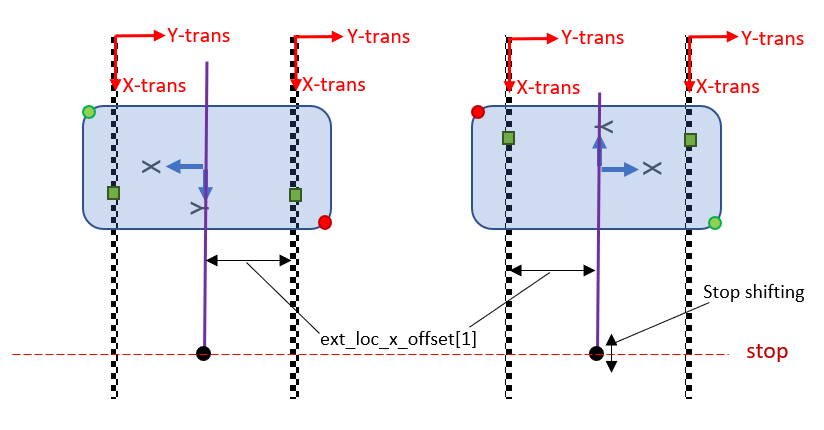
Figure 22: Stopping points for transversal driving.